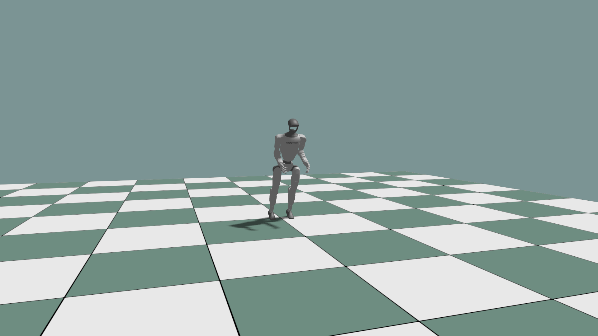
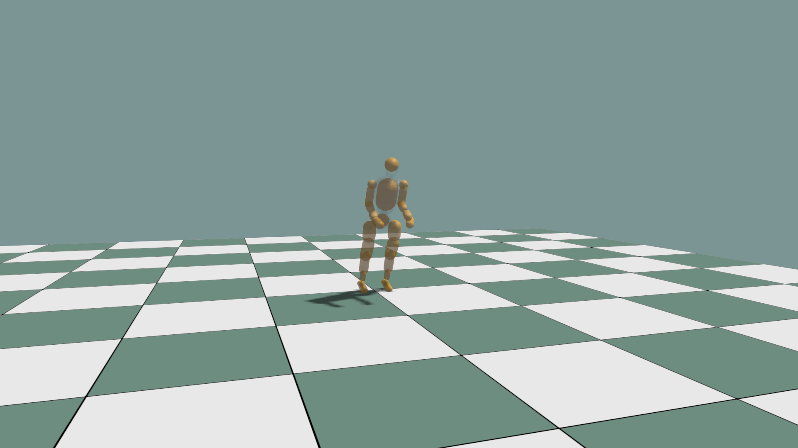

Load an MJCF Articulation¶
Use world.load_mjcf(...) to parse an MJCF file and
world.add_articulation(...) to create the live simulation object.
data = world.load_mjcf(mjcf_path, order="DFS")
config = ke.physics.ArticulationConfig.free_base()
record = world.add_articulation(
data,
env_id=0,
obj_id=0,
name="robot",
config=config,
)
robot = record.articulation
Use ArticulationConfig.fixed_base() for a fixed root. Keep the same traversal
order when creating articulation visuals so simulation body indices and visual
body indices agree.
robot_visual = visual.add_articulation_scene_graph(
0,
0,
mjcf_path,
path="/robot",
order="DFS",
material=robot_material,
)
Run the complete control example with an MJCF file:
python ./python/examples/mjcf_dof_control.py /path/to/robot.xml
Complete source: mjcf_dof_control.py
1"""Generic MJCF articulation DOF position-control viewer."""
2
3from __future__ import annotations
4
5import argparse
6import math
7from pathlib import Path
8
9import numpy as np
10
11import kangengine as ke
12from kangengine import imgui, keys
13
14
15def package_asset_path(*parts: str) -> str:
16 return str(Path(ke.__file__).resolve().parent / "assets" / Path(*parts))
17
18
19def default_mjcf_path() -> Path:
20 return Path(package_asset_path("characters", "kw", "kw.xml"))
21
22
23class MjcfDofControlApp(ke.App):
24 """Load an MJCF articulation and expose every DOF as an ImGui slider."""
25
26 window_title = "MJCF DOF Control"
27 object_name = "mjcf"
28 prim_base_path = "/mjcf"
29 camera_pos = (3.8, -5.4, 1.2)
30 camera_target = (0.0, 0.0, 0.45)
31 # None preserves per-geom MJCF rgba. Set an RGBA tuple to force a single
32 # override color for the whole articulation.
33 visual_color = None # np.array([1,1,1, 1.0])
34 ground_size = 10.0
35 root_pos = (0.0, 0.0, 1.5)
36 root_rot_xyzw = (0.0, 0.0, 0.0, 1.0)
37 fixed_base = False
38 order = "DFS"
39 sim_dt = 1.0 / 240.0
40 step_substeps = 4
41 default_kp = 120.0
42 default_kd = 12.0
43 default_anim_amp = 0.35
44 default_anim_speed = 1.0
45 default_contact_force_scale = 0.002
46 contact_force_threshold = 1e-3
47 visual_alpha_with_collision = 0.1
48
49 def __init__(self, mjcf_path: str | Path):
50 super().__init__()
51 self.mjcf_path = str(Path(mjcf_path).expanduser().resolve())
52
53 def setup(self):
54 self.timing = self.configure_timing(
55 ke.SimulationTimingConfig.from_dt(
56 physics_dt=self.sim_dt,
57 fixed_dt=self.sim_dt * self.step_substeps,
58 render_hz=60.0,
59 )
60 )
61 self.set_simulation_hotkeys_enabled(True)
62 self.elapsed = 0.0
63 self.kp = float(self.default_kp)
64 self.kd = float(self.default_kd)
65 self.animate = True
66 self.anim_amp = float(self.default_anim_amp)
67 self.anim_speed = float(self.default_anim_speed)
68 self.show_collision = False
69 self.show_contact_forces = False
70 self.contact_force_scale = float(self.default_contact_force_scale)
71 self.contact_force_view = None
72 self.contact_force_color = np.array([[1.0, 0.25, 0.05, 1.0]], dtype=np.float32)
73 self.empty_vec3 = np.empty((0, 3), dtype=np.float32)
74 self.empty_vec4 = np.empty((0, 4), dtype=np.float32)
75 red = ke.ColorLibrary.get(ke.ColorType.RED)
76 magenta = ke.ColorLibrary.get(ke.ColorType.MAGENTA)
77 self.drag_force_line_color = np.array(
78 [[red.r, red.g, red.b, red.a]], dtype=np.float32
79 )
80 self.drag_force_target_color = np.array(
81 [[magenta.r, magenta.g, magenta.b, magenta.a]], dtype=np.float32
82 )
83 self.drag_force_line_starts = np.empty((3, 3), dtype=np.float32)
84 self.drag_force_line_ends = np.empty((3, 3), dtype=np.float32)
85 self.drag_force_up_z = np.array([0.0, 0.0, 1.0], dtype=np.float32)
86 self.drag_force_up_y = np.array([0.0, 1.0, 0.0], dtype=np.float32)
87 self.drag_force_enabled = True
88 self.drag_force_stiffness = 750.0
89 self.drag_force_damping = 75.0
90 self.drag_force_max = 300.0
91 self.drag_force_arrow_scale = 0.003
92 self.show_drag_force_arrow = True
93 self._drag_force_body_id = None
94 self._drag_force_local_anchor = None
95 self._drag_force_target = None
96 self._drag_force_anchor_world = None
97 self._drag_force_vector = None
98 self._clear_drag_force_arrow()
99
100 self.configure_camera()
101 self.standard_materials = self.create_standard_materials()
102 self.debug_material = self.standard_materials.common
103 self.create_world()
104 self.load_articulation()
105 self._reset()
106 self.print_summary()
107
108 def configure_camera(self):
109 self.get_camera().set_camera_pos(ke.Vec3(*self.camera_pos))
110 self.get_camera().set_target_pos(ke.Vec3(*self.camera_target))
111
112 def create_world(self):
113 self.world = ke.sim.KangSimWorld(
114 num_envs=1,
115 sim_dt=self.timing.physics_dt,
116 add_ground=True,
117 )
118 self.visual = ke.visual.sim.SimWorldVisualizer(self, self.world)
119
120 self.ground_view = self.scene.add_ground(
121 "/ground",
122 scale=float(self.ground_size),
123 material=self.standard_materials.ground,
124 )
125
126 def load_articulation(self):
127 data = self.world.load_mjcf(self.mjcf_path, order=self.order)
128 self.obj_id = 0
129 config = (
130 ke.physics.ArticulationConfig.fixed_base()
131 if self.fixed_base
132 else ke.physics.ArticulationConfig.free_base()
133 )
134 self.robot = self.world.add_articulation(
135 data,
136 env_id=0,
137 obj_id=self.obj_id,
138 name=self.object_name,
139 config=config,
140 ).articulation
141
142 self.articulation_visual_view = self.visual.add_articulation_scene_graph(
143 0,
144 self.obj_id,
145 self.mjcf_path,
146 path=self.prim_base_path,
147 order=self.order,
148 material=self.standard_materials.pbr,
149 collision_path=f"{self.prim_base_path}_collision",
150 show_collision=self.show_collision,
151 color=(
152 None
153 if self.visual_color is None
154 else np.array(self.visual_color, dtype=np.float32)
155 ),
156 )
157 self.visual_body_prims = self.articulation_visual_view.prims
158 # self.collision_body_prims = self.articulation_visual_view.collision_visuals
159
160 self.num_dofs = self.robot.num_dofs()
161 self.dof_names = self.world.state.get_obj_dof_names(self.obj_id)
162 self.dof_limits = np.asarray(
163 self.world.state.get_obj_dof_limits(self.obj_id), dtype=np.float32
164 )
165 if self.dof_limits.shape != (self.num_dofs, 2):
166 self.dof_limits = np.tile(
167 np.array([-math.pi, math.pi], dtype=np.float32),
168 (self.num_dofs, 1),
169 )
170 self.targets = self.initial_targets()
171
172 def initial_targets(self) -> np.ndarray:
173 return np.zeros(self.num_dofs, dtype=np.float32)
174
175 def print_summary(self):
176 print(
177 f"{self.object_name} loaded: links={self.robot.num_links()} dofs={self.num_dofs}"
178 )
179 print("DOFs:", ", ".join(self.dof_names))
180 print("XML:", self.mjcf_path)
181
182 def _reset(self):
183 self.elapsed = 0.0
184 self.targets[:] = self.initial_targets()
185 self.world.set_root_state(
186 None,
187 self.obj_id,
188 np.array(self.root_pos, dtype=np.float32),
189 np.array(self.root_rot_xyzw, dtype=np.float32),
190 )
191 self.world.set_dof_state(None, self.obj_id, self.targets)
192 self.world.set_cmd(
193 None,
194 self.obj_id,
195 self.targets,
196 mode=ke.sim.ControlMode.POS,
197 kp=self.kp,
198 kd=self.kd,
199 )
200 self.world.step(substeps=0, apply_commands=False)
201 self.visual.sync()
202 self._update_contact_force_arrows()
203 self._clear_drag_force()
204
205 def _animated_targets(self):
206 out = np.zeros_like(self.targets)
207 for i in range(self.num_dofs):
208 lo, hi = self.slider_limits(i)
209 span = max(0.0, min(float(hi - lo) * 0.35, self.anim_amp))
210 center = 0.5 * float(lo + hi)
211 phase = self.elapsed * self.anim_speed + i * 0.75
212 out[i] = np.clip(center + span * math.sin(phase), lo, hi)
213 return out
214
215 def slider_limits(self, dof_index: int) -> tuple[float, float]:
216 lo, hi = self.dof_limits[dof_index]
217 if not np.isfinite(lo) or not np.isfinite(hi) or hi <= lo:
218 return -math.pi, math.pi
219 return float(lo), float(hi)
220
221 def pre_update(self):
222 if self.was_key_pressed(keys.R):
223 self._reset()
224 if self.was_key_pressed(keys.Q):
225 self.animate = not self.animate
226
227 def fixed_update(self, fixed_dt):
228 self.elapsed += fixed_dt
229 if self.animate:
230 self.targets[:] = self._animated_targets()
231
232 self.world.set_cmd(
233 None,
234 self.obj_id,
235 self.targets,
236 mode=ke.sim.ControlMode.POS,
237 kp=self.kp,
238 kd=self.kd,
239 )
240 self.world.advance(fixed_dt)
241
242 def pre_render(self):
243 self.visual.sync()
244 self._update_contact_force_arrows()
245 self._update_drag_force_arrow()
246 self.check_error()
247
248 def on_force_drag_begin(self, result, target):
249 if not self.drag_force_enabled or not result.hit:
250 self._clear_drag_force()
251 return
252
253 pick = self.articulation_visual_view.pick_body(result)
254 if pick is None:
255 self._clear_drag_force()
256 return
257
258 self._drag_force_body_id = int(pick.body_id)
259 body_state = self._drag_body_state(self._drag_force_body_id)
260 if body_state is None:
261 return
262 body_pos, body_rot, _, _ = body_state
263 hit_pos = self._vec3_to_np(result.position)
264 self._drag_force_local_anchor = self._quat_inverse_rotate_xyzw(
265 body_rot, hit_pos - body_pos
266 )
267 self._drag_force_target = self._vec3_to_np(target)
268 self._apply_drag_force()
269 self._update_drag_force_arrow()
270
271 def on_force_drag_update(self, result, target):
272 if not self.drag_force_enabled or self._drag_force_body_id is None:
273 self._clear_drag_force()
274 return
275 self._drag_force_target = self._vec3_to_np(target)
276 self._apply_drag_force()
277 self._update_drag_force_arrow()
278
279 def on_force_drag_end(self):
280 self._clear_drag_force()
281
282 def _apply_drag_force(self):
283 if (
284 self._drag_force_body_id is None
285 or self._drag_force_local_anchor is None
286 or self._drag_force_target is None
287 ):
288 return
289 body_state = self._drag_body_state(self._drag_force_body_id)
290 if body_state is None:
291 return
292 body_pos, body_rot, body_vel, body_ang_vel = body_state
293 radius = self._quat_rotate_xyzw(body_rot, self._drag_force_local_anchor)
294 anchor_world = body_pos + radius
295 point_vel = body_vel + np.cross(body_ang_vel, radius)
296 force = (self._drag_force_target - anchor_world) * float(
297 self.drag_force_stiffness
298 ) - point_vel * float(self.drag_force_damping)
299 norm = float(np.linalg.norm(force))
300 if norm > float(self.drag_force_max) > 0.0:
301 force *= float(self.drag_force_max) / norm
302 self._drag_force_anchor_world = anchor_world.astype(np.float32)
303 self._drag_force_vector = force.astype(np.float32)
304 self.world.set_body_force_at_position(
305 0,
306 self.obj_id,
307 self._drag_force_body_id,
308 force.astype(np.float32),
309 anchor_world.astype(np.float32),
310 )
311
312 def _clear_drag_force_arrow(self):
313 self.clear_debug_lines("/debug/mjcf_drag_force")
314 self.clear_debug_points("/debug/mjcf_drag_force_target")
315
316 def _update_drag_force_arrow(self):
317 if (
318 not self.show_drag_force_arrow
319 or self._drag_force_anchor_world is None
320 or self._drag_force_vector is None
321 or self._drag_force_target is None
322 ):
323 self._clear_drag_force_arrow()
324 return
325
326 start = self._drag_force_anchor_world
327 force = self._drag_force_vector
328 force_len = float(np.linalg.norm(force))
329 if force_len < 1e-5:
330 self._clear_drag_force_arrow()
331 return
332
333 direction = force / force_len
334 end = start + force * float(self.drag_force_arrow_scale)
335 shaft_len = float(np.linalg.norm(end - start))
336 head_len = min(max(shaft_len * 0.25, 0.04), 0.18)
337
338 side = np.cross(direction, self.drag_force_up_z)
339 if np.linalg.norm(side) < 1e-5:
340 side = np.cross(direction, self.drag_force_up_y)
341 side = side / max(float(np.linalg.norm(side)), 1e-8)
342
343 back = end - direction * head_len
344 left = back + side * head_len * 0.45
345 right = back - side * head_len * 0.45
346 self.drag_force_line_starts[0] = start
347 self.drag_force_line_starts[1] = end
348 self.drag_force_line_starts[2] = end
349 self.drag_force_line_ends[0] = end
350 self.drag_force_line_ends[1] = left
351 self.drag_force_line_ends[2] = right
352 self.log_debug_lines(
353 "/debug/mjcf_drag_force",
354 self.drag_force_line_starts,
355 self.drag_force_line_ends,
356 self.drag_force_line_color,
357 3.0,
358 )
359 self.log_debug_points(
360 "/debug/mjcf_drag_force_target",
361 self._drag_force_target.reshape(1, 3),
362 self.drag_force_target_color,
363 10.0,
364 )
365
366 def _drag_body_state(self, body_id: int):
367 body_pos = self._state_array(self.world.state.get_body_pos(self.obj_id)[0])
368 if body_id >= body_pos.shape[0]:
369 self._clear_drag_force()
370 return None
371 body_rot = self._state_array(self.world.state.get_body_rot(self.obj_id)[0])
372 body_vel = self._state_array(self.world.state.get_body_vel(self.obj_id)[0])
373 body_ang_vel = self._state_array(
374 self.world.state.get_body_ang_vel(self.obj_id)[0]
375 )
376 return (
377 body_pos[body_id],
378 body_rot[body_id],
379 body_vel[body_id],
380 body_ang_vel[body_id],
381 )
382
383 def _clear_drag_force(self):
384 if getattr(self, "_drag_force_body_id", None) is not None:
385 self.world.set_body_force(
386 0,
387 self.obj_id,
388 int(self._drag_force_body_id),
389 np.zeros(3, dtype=np.float32),
390 )
391 self._drag_force_body_id = None
392 self._drag_force_local_anchor = None
393 self._drag_force_target = None
394
395 def _clear_contact_force_arrows(self):
396 if self.contact_force_view is None:
397 return
398 self.contact_force_view.update_arrows(
399 self.empty_vec3,
400 self.empty_vec3,
401 self.empty_vec4,
402 )
403
404 def _update_contact_force_arrows(self):
405 if not self.show_contact_forces:
406 self._clear_contact_force_arrows()
407 return
408
409 # Body-aggregated force visualization.
410 # the arrows start at link origins instead of real contact points.
411 # body_pos = np.asarray(
412 # self.world.state.get_body_pos(self.obj_id)[0], dtype=np.float32
413 # )
414 # forces = np.asarray(
415 # self.world.state.get_contact_forces(self.obj_id)[0], dtype=np.float32
416 # )
417 # active = np.linalg.norm(forces, axis=1) > float(self.contact_force_threshold)
418 # starts = body_pos[active]
419 # ends = starts + forces[active] * float(self.contact_force_scale)
420
421 contacts = self.world.physics.get_contacts()
422 starts = []
423 ends = []
424 dt = max(float(self.world.sim_dt), 1e-8)
425 for contact in contacts:
426 position = self._vec3_to_np(contact.position)
427 force = self._vec3_to_np(contact.impulse) / dt
428 if np.linalg.norm(force) <= float(self.contact_force_threshold):
429 continue
430 starts.append(position)
431 ends.append(position + force * float(self.contact_force_scale))
432
433 if not starts:
434 self._clear_contact_force_arrows()
435 return
436
437 starts = np.asarray(starts, dtype=np.float32)
438 ends = np.asarray(ends, dtype=np.float32)
439 colors = np.repeat(self.contact_force_color, starts.shape[0], axis=0)
440
441 if self.contact_force_view is None:
442 self.contact_force_view = self.scene.log_arrows(
443 "/debug/contact_forces",
444 self.debug_material,
445 starts,
446 ends,
447 colors,
448 0.015,
449 12,
450 )
451 else:
452 self.contact_force_view.update_arrows(starts, ends, colors)
453
454 @staticmethod
455 def _vec3_to_np(value) -> np.ndarray:
456 return np.array(
457 [float(value.x), float(value.y), float(value.z)], dtype=np.float32
458 )
459
460 @staticmethod
461 def _state_array(value) -> np.ndarray:
462 if hasattr(value, "detach"):
463 value = value.detach().cpu().numpy()
464 return np.asarray(value, dtype=np.float32)
465
466 @staticmethod
467 def _quat_rotate_xyzw(quat, vector) -> np.ndarray:
468 q = np.asarray(quat, dtype=np.float32)
469 v = np.asarray(vector, dtype=np.float32)
470 qv = q[:3]
471 t = 2.0 * np.cross(qv, v)
472 return (v + q[3] * t + np.cross(qv, t)).astype(np.float32)
473
474 @classmethod
475 def _quat_inverse_rotate_xyzw(cls, quat, vector) -> np.ndarray:
476 q = np.asarray(quat, dtype=np.float32).copy()
477 q[:3] *= -1.0
478 return cls._quat_rotate_xyzw(q, vector)
479
480 def _set_visual_alpha(self, alpha: float):
481 if self.visual_color is None:
482 self.articulation_visual_view.set_alpha(alpha)
483 return
484 color = np.array(self.visual_color, dtype=np.float32).reshape(-1)
485 if color.size == 3:
486 color = np.concatenate([color, np.ones(1, dtype=np.float32)])
487 color = color[:4].copy()
488 color[3] = float(alpha)
489 self.articulation_visual_view.set_color(color)
490
491 def _set_collision_visible(self, visible: bool):
492 self.show_collision = bool(visible)
493 self.articulation_visual_view.set_collision_visible(self.show_collision)
494 self._set_visual_alpha(
495 self.visual_alpha_with_collision if self.show_collision else 1.0
496 )
497
498 def render(self):
499 imgui.begin(self.window_title)
500 state = "paused" if self.is_simulation_paused() else "running"
501 imgui.text(f"State: {state}")
502 imgui.text(
503 "Enter: play/pause Space: pause/step R: reset Q: auto motion"
504 )
505 imgui.text(f"Links: {self.robot.num_links()} DOFs: {self.num_dofs}")
506 imgui.text(Path(self.mjcf_path).name)
507 imgui.separator()
508 _, self.kp = imgui.slider_float("kp", self.kp, 0.0, 1000.0)
509 _, self.kd = imgui.slider_float("kd", self.kd, 0.0, 80.0)
510 _, self.animate = imgui.checkbox("Animate targets", self.animate)
511 _, self.anim_amp = imgui.slider_float("anim amplitude", self.anim_amp, 0.0, 1.5)
512 _, self.anim_speed = imgui.slider_float("anim speed", self.anim_speed, 0.0, 6.0)
513 changed, self.show_collision = imgui.checkbox(
514 "Show collision prims",
515 self.show_collision,
516 )
517 if changed:
518 self._set_collision_visible(self.show_collision)
519 changed, self.show_contact_forces = imgui.checkbox(
520 "Show contact forces",
521 self.show_contact_forces,
522 )
523 if changed:
524 self._update_contact_force_arrows()
525 _, self.contact_force_scale = imgui.slider_float(
526 "contact force scale",
527 self.contact_force_scale,
528 0.0,
529 0.02,
530 )
531 imgui.separator()
532 changed, self.drag_force_enabled = imgui.checkbox(
533 "Enable drag force",
534 self.drag_force_enabled,
535 )
536 if changed and not self.drag_force_enabled:
537 self._clear_drag_force()
538 changed, self.show_drag_force_arrow = imgui.checkbox(
539 "Show drag force arrow",
540 self.show_drag_force_arrow,
541 )
542 if changed and not self.show_drag_force_arrow:
543 self._clear_drag_force_arrow()
544 _, self.drag_force_stiffness = imgui.slider_float(
545 "drag force stiffness",
546 self.drag_force_stiffness,
547 0.0,
548 1000.0,
549 )
550 _, self.drag_force_damping = imgui.slider_float(
551 "drag force damping",
552 self.drag_force_damping,
553 0.0,
554 80.0,
555 )
556 _, self.drag_force_max = imgui.slider_float(
557 "drag force max",
558 self.drag_force_max,
559 0.0,
560 2000.0,
561 )
562 _, self.drag_force_arrow_scale = imgui.slider_float(
563 "drag force arrow scale",
564 self.drag_force_arrow_scale,
565 0.0005,
566 0.02,
567 )
568 if self._drag_force_body_id is not None:
569 imgui.text(f"Dragging body: {self._drag_force_body_id}")
570 imgui.separator()
571
572 for i, name in enumerate(self.dof_names):
573 lo, hi = self.slider_limits(i)
574 changed, value = imgui.slider_float(name, float(self.targets[i]), lo, hi)
575 if changed:
576 self.targets[i] = value
577 self.animate = False
578
579 pos = self.world.state.get_dof_pos(self.obj_id)[0]
580 imgui.separator()
581 imgui.text("Current DOF positions")
582 for name, value in zip(self.dof_names, pos):
583 imgui.text(f"{name}: {float(value): .3f}")
584 imgui.end()
585
586 def cleanup(self):
587 if hasattr(self, "world"):
588 self.world.release()
589
590
591def main():
592 parser = argparse.ArgumentParser()
593 parser.add_argument(
594 "mjcf_path",
595 nargs="?",
596 default=str(default_mjcf_path()),
597 help="Path to an MJCF XML file",
598 )
599 parser.add_argument(
600 "--fixed-base",
601 action="store_true",
602 help="Use a fixed root instead of the default free root.",
603 )
604 parser.add_argument("--order", default="DFS", choices=("DFS", "BFS"))
605 parser.add_argument("--width", type=int, default=1920)
606 parser.add_argument("--height", type=int, default=1080)
607 args = parser.parse_args()
608
609 class CliMjcfDofControlApp(MjcfDofControlApp):
610 fixed_base = args.fixed_base
611 order = args.order
612
613 app = CliMjcfDofControlApp(args.mjcf_path)
614 app.initialize(args.width, args.height, False, ke.UpAxis.Z)
615 app.start()
616
617
618if __name__ == "__main__":
619 main()
MJCF articulation |
Collision debug |
|---|---|
 |
 |